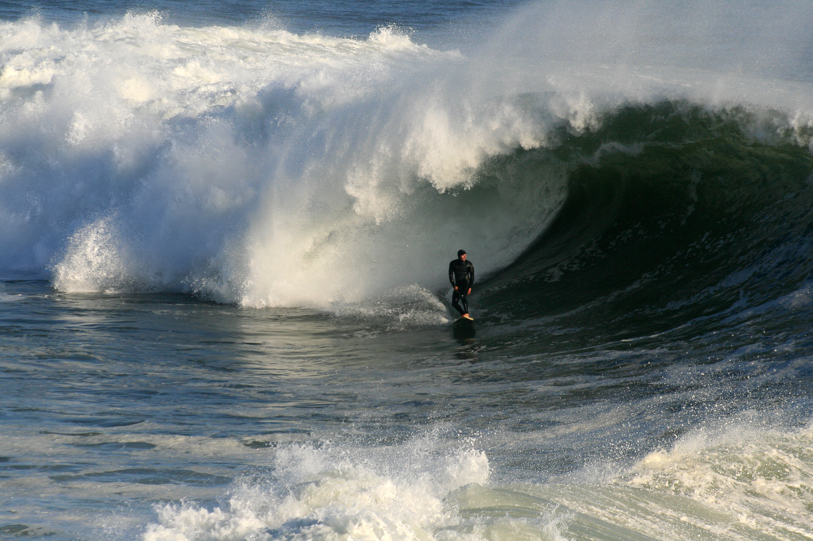

Pictures
Favorite General Conference Talk: Elder Kearon - Christ lifts us. We can lift others.
JPEG are best for photographs and images with many colors like landscapes. GIF are best for simple graphics with limited colors like icons. PNG are best for images with transparency like logos which is also what makes it unique.

use a photo editing software to resize your images because it helps others view the site more efficiently.